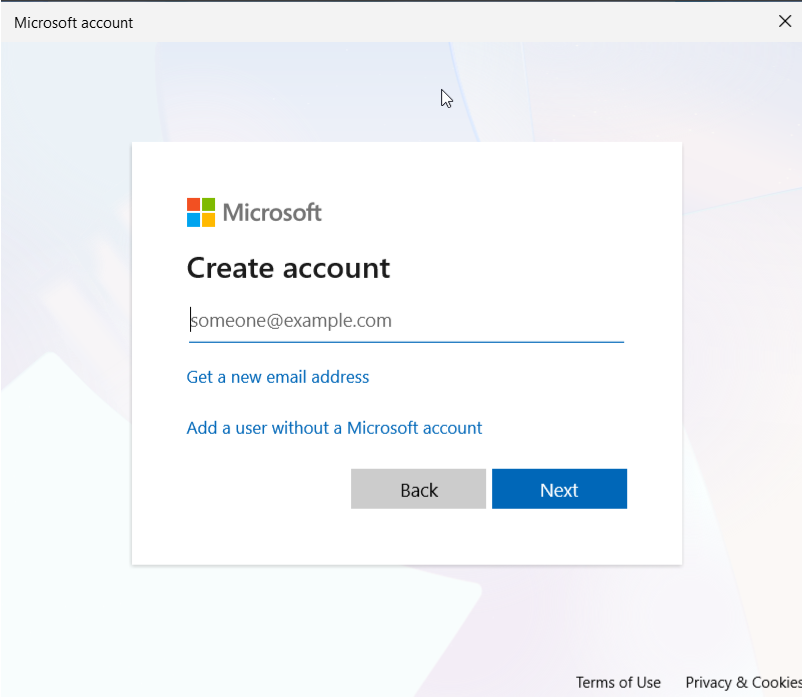
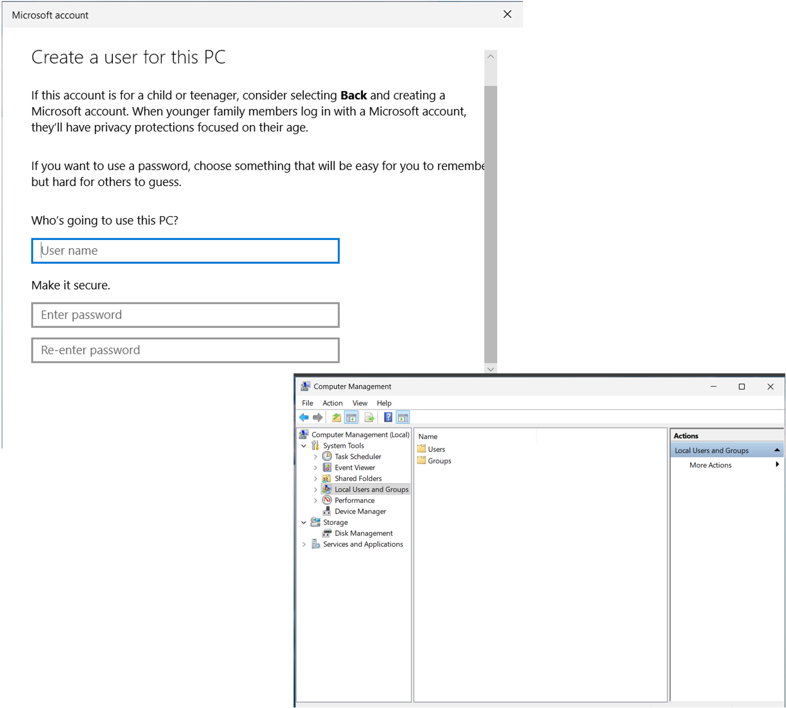
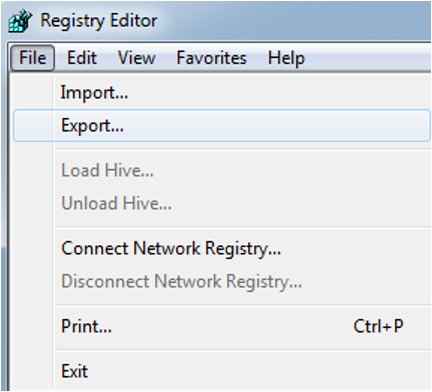

Permissions and User Profiles
File properties
The Properties tab of files and folders in Windows lets you configure permissions for different users or groups of users.

A folder’s Properties → Security tab
Adding a user
- Click the Edit button; this opens a new window.
- Click Add, then type the name of the user (e.g.
FrenchUser), or click Advanced → Add to find the user.

The Select Users, Computers, Service Accounts, or Groups dialog
Adding another user on Windows 11
Since Windows 8, Microsoft has favoured Microsoft Cloud accounts over creating local accounts (only existing on the PC). Cloud accounts require a login using an email and password from a valid Microsoft platform such as Outlook.com, Live.com, Hotmail.com or a school/work Microfot 365 account. Altough most editions of Windows 11, push for using a cloud account when first installing Windows (OOBE screen, forcing a login), it’s still possible to create local account:
Officially, there are two ways to add a user in Windows 11: with a Microsoft account or without one.

Source: How to Create a Local or Offline Account in Windows 11 or Windows 10
User account with a Microsoft account
- Uses features such as synchronization across devices.
- Gives access to Microsoft services such as Office 365, OneDrive, etc.
- Requires Internet access.

Local user account (without a Microsoft account)
- Creates a user account only on this particular machine.
- All Windows machines have a built-in local administrator account used for troubleshooting.
- This can also be done via Computer Management (
Win + R, typecompmgmt.msc). - Or via the command prompt:

Activity on VM: Adding local user profiles
- Start → Control Panel
- User Accounts → Manage another account
- Add a user account: French User
- Using a Microsoft account
- Without a Microsoft account
- Add a second user account: Big Boss
- Without a Microsoft account
- Select the newly created account and change the account type to Local Administrator.
Using the Command Line Terminal: Adding local user profiles
- Run CMD with admin permissions
- Type the command above to add a third user.
Administrator account required


What is a user profile made up of?
User profile = Registry hive (HKEY_CURRENT_USER) + a set of folders stored in the file system

What is the registry?
The Windows registry is a hierarchical database that stores configuration settings and options for the Microsoft Windows operating system and installed applications.

The parts of the Registry: root keys, keys, subkeys and values
Using Registry Editor
Warning
- When you use the Registry Editor, you risk breaking things.
- Applications might not start, utilities may not work, or your computer may not boot.
- Always back up the Registry (preferably to a thumb drive) before you change anything. After making the change, reboot to see if it had the desired effect. If not, restore the old settings from your backup.
Activity VM: Backing up and restoring the Registry
- To save a copy of the Registry: export the full registry, or a single key or subkey (with all subkeys and values under it), using File → Export.
- The backup is saved with the extension
.reg. - To restore backed-up keys: use File → Import, or right-click the
.regfile and select Merge.


Activity VM: Change the highlight colour
- Press Windows key + R to open the Run dialog box.
- Type
regeditand press Enter to open the Registry Editor. - Navigate to
HKEY_CURRENT_USER\Control Panel\Colors. - Find the Hilight value in the right-hand pane. It controls the highlight colour of selected items.
- Double-click Hilight to open its properties.
- In the Value data field, enter the RGB value of the colour you want. For example, for light blue enter
192 217 255. - Click OK to save the changes.
- Close the Registry Editor.
More registry hacks: https://www.minitool.com/backup-tips/windows-10-registry-hacks.html
Updates to the OS and applications
- A service pack is a collection of updates, fixes or enhancements to a software program, delivered as a single installable package. It may add new OS features as well as bug fixes, security enhancements, etc.
- Service packs are commonly issued within the first two years after a product’s release, and are usually numbered (e.g. SP1, SP2).
- Note: Microsoft recommends never being more than two service packs behind.